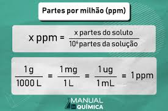

Catálogo de Vídeos de Química 3º Trimestre
Playlist de Química


Parte por milhão (ppm)
PPM ou partes por milhão é uma unidade que mede concentrações muito pequenas de uma substância em outra.
E aí, galera! 😎 Bem-vindos ao meu projetinho de química do 1º ano! Montei essa página aqui pra gente dar uma força nos estudos do terceiro trimestre. Sabe aqueles vídeos de boa que a gente assistiu nas aulas sobre Tabela Periódica e como os elementos se juntam? Pois é, juntei tudo aqui num catálogo fácil de mexer. A ideia é essa mesmo: revisar a matéria sem stress e tirar as dúvidas de um jeito mais tranquilo e visual. Fiquem à vontade pra explorar e bons estudos (ou bom "rolê" pelos vídeos)!
Diluição das soluções
A diluição das soluções é o processo de reduzir a concentração de um soluto em um solvente,adicionando mais solvente à mistura.